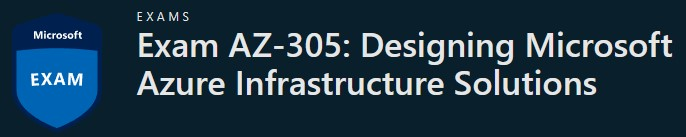

Programación 🖥 | Ingeniería de Datos 📚 | Seguridad 🛡
Las certificaciones de Microsoft en el rol de Solution Architect se centran en validar las habilidades de profesionales encargados de diseñar soluciones tecnológicas integrales que aborden los desafíos empresariales. Estos arquitectos deben ser capaces de crear arquitecturas de sistemas, seleccionar tecnologías adecuadas y garantizar que las soluciones sean seguras, escalables y alineadas con los objetivos comerciales de la organización. Las certificaciones de Microsoft en esta área cubren una amplia gama de competencias, desde arquitectura en la nube hasta el diseño de soluciones empresariales completas, proporcionando a los profesionales las credenciales necesarias para destacar en el diseño y planificación de soluciones tecnológicas efectivas en el entorno empresarial actual.
¿Por dónde empezar? 🤔
Como arquitecto de soluciones de Microsoft Azure, tiene experiencia en la materia en el diseño de soluciones de nube e híbridas que se ejecutan en Azure, incluyendo:
- Computación
- Red
- Almacenamiento
- Supervisión
- Seguridad
Si quieres saber más información acerca de esta certificación dale clic en la imagen 👇
Módulo: Lenguaje de Marcas - Ciclo Formativo: DAW Desarrollo de Aplicaciones Web Desarrollado por: Rafael Armas - Actividad 1 Módulo 1